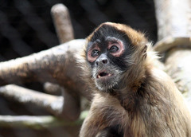

El mono araña centroamericano, chango, mono araña o mono araña de Geoffroy (Ateles geoffroyi), también se conoce como mono araña de manos negras. La especie pertenece a la familia Atelidae (monos araña y aulladores). Es uno de los monos del Nuevo Mundo más grande. El macho mide entre 38 y 50 cm, la hembra entre 34 y 52 cm, ambos géneros pesan de 4 a 6 k y llegan a vivir de 27 a 30 años. Su tronco globular delgado posee brazos más largos que sus extremidades inferiores y su larga cola prensil soporta todo su peso, funcionando como miembro adicional. Su dedo pulgar es vestigial, a cambio sus otros dedos son largos y fuertes en forma de gancho; esta adaptación le permite balancearse entre las ramas. Su cabeza es pequeña y el hocico proporcional. El pelaje superior puede ser negro, café o rojizo y el de su cara es a menudo marcado con una máscara pálida de piel despigmentada alrededor de ojos y hocico. Brazos y pies son obscuros y sus partes inferiores más pálidas (blanco, café pálido o rojizo). Se congrega en grupos de entre 6 y 40 miembros disgregándose en grupos más pequeños durante la noche en procura de comida. Se alimenta principalmente de pulpa de fruta. Requiere de grandes espacios para subsistir. Habita en el sur y este de México y en América Central hasta Panamá, alcanzando probablemente el extremo norte del Pacífico colombiano. La especie es representativa de la selva tropical y tiene un papel ecológico sobresaliente en la dispersión de semillas, participando en la regeneración y mantenimiento de la vegetación. La NOM-059-SEMARNAT-2010 de México le considera en peligro de extinción; y la UICN como especie en peligro. Este mono es fuente alimenticia de grupos mestizos e indígenas de América Central. También se le usa como mascota. Debido a lo anterior, así como a la deforestación, cacería y enfermedades, sus poblaciones han disminuido.
Caracteristicas